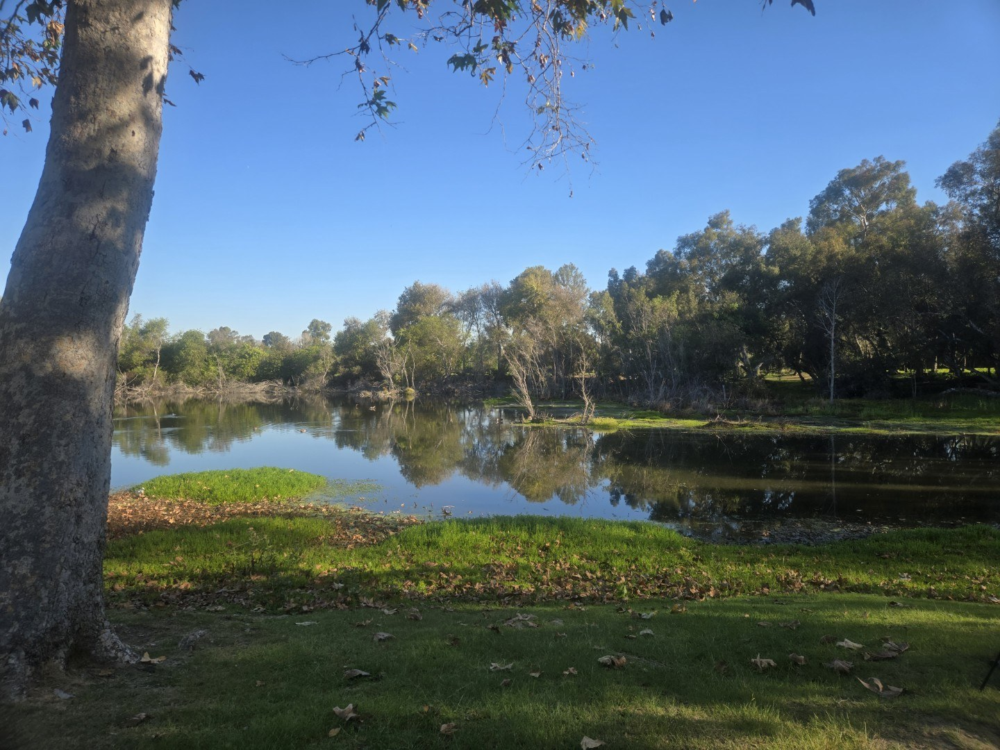
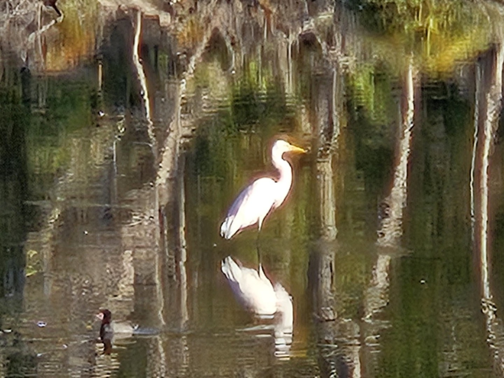

BAJA TROY CHECKS IT OUT
BAJATROY REVIEWS
HUNTINGTON BEACH
CENTRAL PARK LAKES
“Two lakes. One hometown. Plenty of reasons to cast.”
BAJA TROY
2 lakeshometown waterhuntington & talbertshore fishing only
HUNTINGTON BEACH, CALIFORNIA
CENTRAL PARK LAKES NAVIGATION
Jump to a Lake
Tap a lake to jump straight there. The INDEX button in the bar below brings you back to this page from anywhere — and HOME takes you to your front door.
HUNTINGTON BEACH CENTRAL PARK LAKES
HOW TO USE THIS PACK
Two named lakes inside one big park: Huntington Lake on the west side, Talbert Lake on the east. Both fish from the bank, and each keeps its own personality.
THE LAKES
- 01Huntington Lake — Central Park West
- 02Talbert Lake — Central Park East
BAJA TROY’S CALL
“The fish don’t care how fancy your gear is—and they’re happy to prove it.”
The city lists no separate lake fishing fee — your California fishing license is the ticket, 16 and older. Park hours run 5 a.m. to 10 p.m.
Fished these lakes? Got a correction, a hot bite report, or a story worth tellin’? Email BAJA TROY at bajatroyreviews@gmail.com — and check the front door (HOME) for the podcast invite. Fish these waters and you might end up sitting down for an interview with me.
LAKE 01 OF 02
HUNTINGTON LAKE
HUNTINGTON BEACH CENTRAL PARK WEST
Huntington Lake is the west-side water — open grass, benches where the regulars hold court, and room to work a cast along the bank. Boats and rafts stay home; your feet do the fishing.

The west lake on a clear morning — grass, glass, and room to cast.
Photo: BAJA TROY
Photo: BAJA TROY
SPECIES — LISTED FOR THE PARK LAKES
largemouth basschannel catfishbluegill & sunfishcrappierainbow trout (winter)carp
ACCESS
shore fishing onlyno boats, rafts, or float tubesbenches & trailspark hours 5am–10pm
VIBE
hometown waterfamilywalk-in easyshore fishing
HUNTINGTON LAKE
ACCESS & FEES
FISHING FEE
No separate lake fishing fee is listed by the City of Huntington Beach. California fishing-license requirements apply.
CA LICENSE 2026
Resident $64.54/yr · nonresident $174.14/yr · 1-day $21.09 · 2-day $32.40. Second-rod validation $20.26. Buy through CDFW online, a license agent, or a CDFW office — not at the lake.
WHO NEEDS ONE
Anglers 16 and older — keep the license in your immediate possession (you do not have to wear it). Under 16 fishes free.
PARK HOURS
5:00 a.m. to 10:00 p.m.; park curfew 10 p.m.–5 a.m. Individual lot gates may vary — check posted signs.
BOATS
No boats, rafts, or float tubes are permitted on the lakes. Shore fishing only.
CLOSURES
No lake-specific closure calendar was verified. Check posted notices or call the park before a holiday trip: (714) 536-5486.
HUNTINGTON LAKE
SPECIES & STOCKING
LISTED FOR THE PARK LAKES
Channel catfish, largemouth bass, bluegill, crappie, rainbow trout and carp. The city does not break the list down per lake.
STOCKING
The city states channel catfish are stocked in summer and rainbow trout in winter.
PLANT RECORDS
CDFW’s schedule lists plants at “Huntington Park Lake,” and fish-report databases log trout plants at Huntington Central Park Lake through spring 2025. Records confirm plants in the park — not which named lake gets each delivery.
PROMISE NOTHING FIXED
Plant schedules change with water, weather and operations. Check CDFW’s current schedule the week you fish.
HUNTINGTON LAKE
SEASONS & TIMING
BEST WINDOWS
Winter carries the trout plants; summer brings the catfish; spring and fall are the comfortable bass windows. The park opens at 5 a.m. — the first hour of light is the locals’ hour.
HUNTINGTON LAKE
TACTICS & GEAR
SPRING BASS
Work the shoreline cover and drop-offs with plastics and small crankbaits; bass fishing is suggested catch-and-release — handle them wet and quick.
SUMMER CATS
Evening bottom-fishing with cut bait or stink bait along the deeper bank; catfish prowl after the walkers thin out.
WINTER TROUT
After a plant, fish small spinners, mini-jigs and power bait near the inflow and along the dam face.
PANFISH
Bluegill and crappie on worms and bobbers — the classic first-fish setup for kids on these banks.
HUNTINGTON LAKE
FACILITIES & SAFETY
ON SITE
Restrooms, four playgrounds, walking and exercise trails, benches around both lakes, picnic tables and open grass, disc golf, dog park, equestrian trails. Restaurants sit near the lakes.
RESTROOM NOTE
City reports five of six restroom replacements complete; the final Gothard parking-lot restroom is in design — confirm conditions on arrival.
PARKING
Both free and paid public parking exist in lots throughout the park — check the meter or signage at your chosen entrance.
SHADE
Benches and mature trees ring both lakes; scout your shaded spot on arrival.
SAFETY NOTES
- License in possession if you’re 16 or older — rangers do check.
- Confirm current CDFW freshwater bag and size limits before you keep anything.
- City parks: (714) 536-5486, Mon–Fri 8–5.
HUNTINGTON LAKE
MOUNTAIN MAN VERDICT
DIFFICULTY
Easy walking, honest fishing — no boat to rig, no gate fee, just your license and your feet.
FAMILY-FRIENDLY
Very high — playgrounds, grass, benches, and panfish action for the kids.
Got a better read on this lake? Email bajatroyreviews@gmail.com — local knowledge goes in the next update.
LAKE 02 OF 02
TALBERT LAKE
HUNTINGTON BEACH CENTRAL PARK EAST
Talbert runs a full wildlife show: turtles stacked on the logs, Canadian geese holding formation on the grass, an Egyptian goose that acts like it owns the lease, and a rooster nobody can explain. Skunks, opossums and coyotes work the night shift. Bring a camera — the bass are only part of the cast.

A great egret working the east lake — and it is not the only local with opinions.
Photo: BAJA TROY
Photo: BAJA TROY
SPECIES — LISTED FOR THE PARK LAKES
largemouth basschannel catfishbluegill & sunfishcrappierainbow trout (winter)carp
ACCESS
shore fishing onlyno boats, rafts, or float tubesbenches & trailspark hours 5am–10pm
VIBE
hometown waterwildlife showwalk-in easyphotographer’s lake
TALBERT LAKE
ACCESS & FEES
FISHING FEE
No separate lake fishing fee is listed by the City of Huntington Beach. California fishing-license requirements apply.
CA LICENSE 2026
Resident $64.54/yr · nonresident $174.14/yr · 1-day $21.09 · 2-day $32.40. Second-rod validation $20.26. Buy through CDFW online, a license agent, or a CDFW office — not at the lake.
WHO NEEDS ONE
Anglers 16 and older — keep the license in your immediate possession (you do not have to wear it). Under 16 fishes free.
PARK HOURS
5:00 a.m. to 10:00 p.m.; park curfew 10 p.m.–5 a.m. Individual lot gates may vary — check posted signs.
BOATS
No boats, rafts, or float tubes are permitted on the lakes. Shore fishing only.
CLOSURES
No lake-specific closure calendar was verified. Check posted notices or call the park before a holiday trip: (714) 536-5486.
TALBERT LAKE
SPECIES & STOCKING
LISTED FOR THE PARK LAKES
Channel catfish, largemouth bass, bluegill, crappie, rainbow trout and carp. The city does not break the list down per lake.
STOCKING
The city states channel catfish are stocked in summer and rainbow trout in winter.
PLANT RECORDS
CDFW’s schedule lists plants at “Huntington Park Lake,” and fish-report databases log trout plants at Huntington Central Park Lake through spring 2025. Records confirm plants in the park — not which named lake gets each delivery.
PROMISE NOTHING FIXED
Plant schedules change with water, weather and operations. Check CDFW’s current schedule the week you fish.
TALBERT LAKE
SEASONS & TIMING
BEST WINDOWS
Winter carries the trout plants; summer brings the catfish; spring and fall are the comfortable bass windows. The park opens at 5 a.m. — the first hour of light is the locals’ hour.
TALBERT LAKE
TACTICS & GEAR
SPRING BASS
Work the shoreline cover and drop-offs with plastics and small crankbaits; bass fishing is suggested catch-and-release — handle them wet and quick.
SUMMER CATS
Evening bottom-fishing with cut bait or stink bait along the deeper bank; catfish prowl after the walkers thin out.
WINTER TROUT
After a plant, fish small spinners, mini-jigs and power bait near the inflow and along the dam face.
PANFISH
Bluegill and crappie on worms and bobbers — the classic first-fish setup for kids on these banks.
TALBERT LAKE
FACILITIES & SAFETY
ON SITE
Restrooms, four playgrounds, walking and exercise trails, benches around both lakes, picnic tables and open grass, disc golf, dog park, equestrian trails. Restaurants sit near the lakes.
RESTROOM NOTE
City reports five of six restroom replacements complete; the final Gothard parking-lot restroom is in design — confirm conditions on arrival.
PARKING
Both free and paid public parking exist in lots throughout the park — check the meter or signage at your chosen entrance.
SHADE
Benches and mature trees ring both lakes; scout your shaded spot on arrival.
SAFETY NOTES
- License in possession if you’re 16 or older — rangers do check.
- Confirm current CDFW freshwater bag and size limits before you keep anything.
- City parks: (714) 536-5486, Mon–Fri 8–5.
TALBERT LAKE
MOUNTAIN MAN VERDICT
DIFFICULTY
Easy water with a wild edge — the animals will inspect you while you fish.
FAMILY-FRIENDLY
Very high — nature-ride level wildlife between casts; keep an eye on small kids at dusk.
Got a better read on this lake? Email bajatroyreviews@gmail.com — local knowledge goes in the next update.
FIND BAJA TROY
Watch, Read, Ride Along
WATCH ON YOUTUBE ALL MY LINKS EMAIL BAJA TROYTwo hometown lakes, fact-checked October 2026. Fished these waters? Got a correction or a story? Email me — and check the front door for the podcast invite.
Decks and pages managed & owned by Trailhead Commerce.
“The fish don’t care how fancy your gear is—and they’re happy to prove it.”
TELL ’EM BAJA TROY SENT YOU.
BE A GUEST ON THE PODCAST — LINK IN BIO.